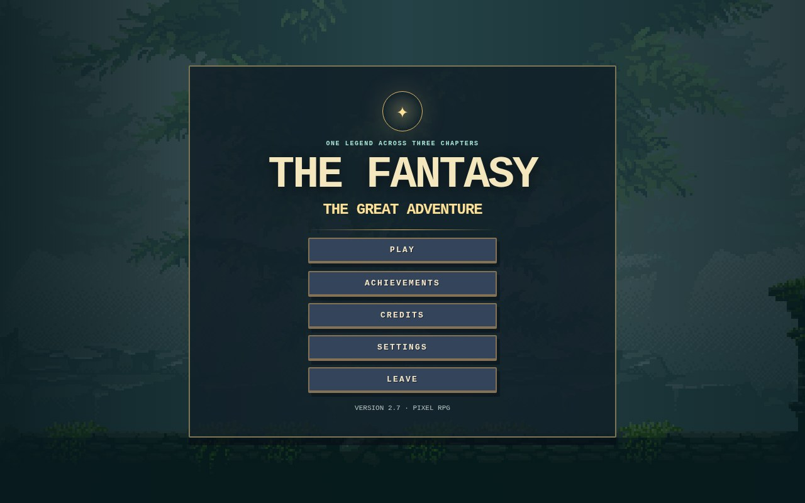
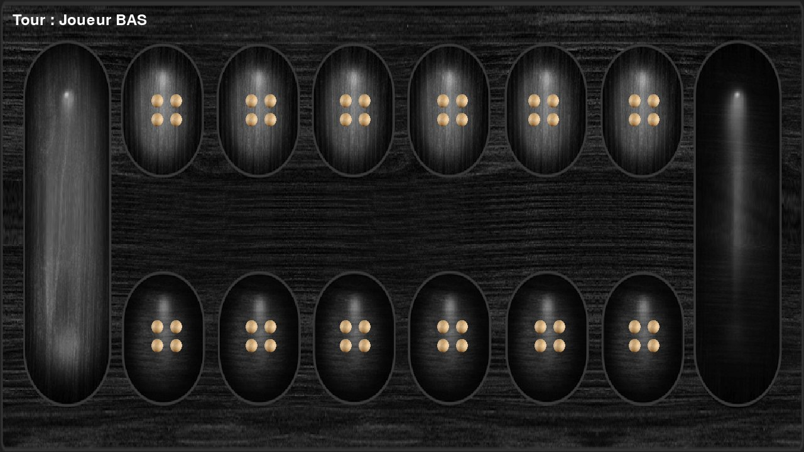
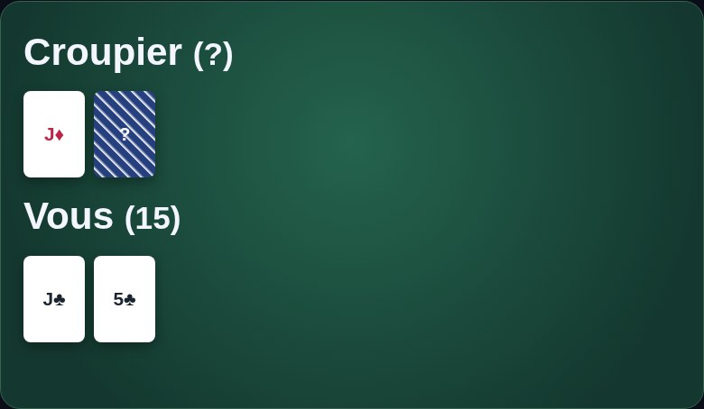
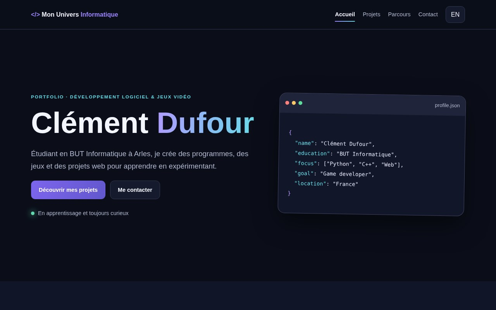

RPG · JAVASCRIPTPROJET À LA UNE
The Fantasy: The Great Adventure
Un RPG né en Python, aujourd'hui développé pour le navigateur en JavaScript, avec classes, combats et trois chapitres à explorer.
Voir le code ↗Une sélection de mes jeux et projets personnels. Utilise les filtres pour explorer les technologies.

RPG · JAVASCRIPTUn RPG né en Python, aujourd'hui développé pour le navigateur en JavaScript, avec classes, combats et trois chapitres à explorer.
Voir le code ↗
PYTHON · PYGAME
BLACKJACK · WEBJeu de cartes en Python ; une démonstration web adaptée est également disponible.

HTML · CSS · JAVASCRIPTPortfolio personnel pour présenter mon parcours et mes réalisations.
Voir le code ↗